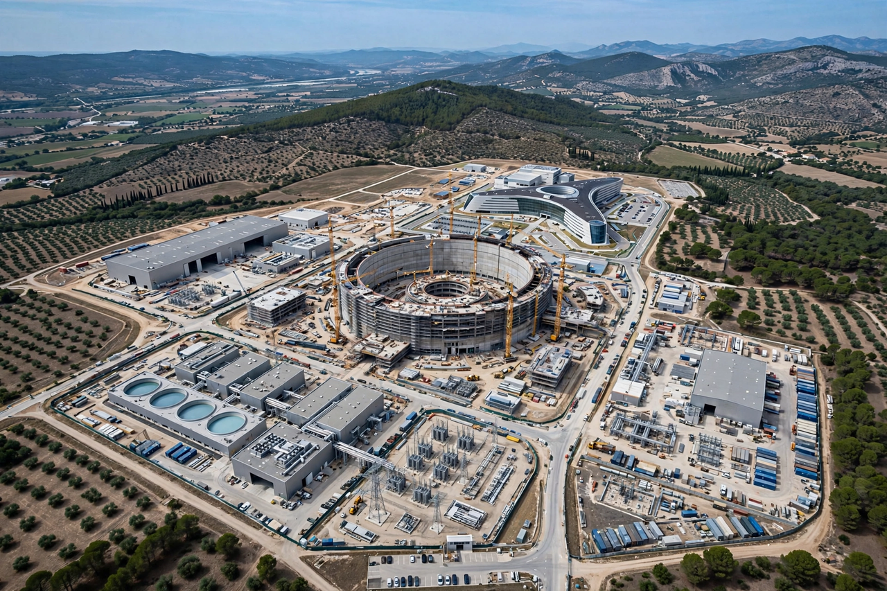

ITER
ITER (initially the International Thermonuclear Experimental Reactor; iter is Latin for "the way" or "the path") is an international nuclear fusion research and engineering megaproject aimed at creating energy through a fusion process similar to that of the Sun. It is being built in Saint-Paul-lès-Durance in southern France, and will be the world's largest tokamak when complete.

| ITER | |
|---|---|
| Location | Saint-Paul-lès-Durance, France |
| Members | China, EU, India, Japan, Russia, South Korea, United States |
| Fuel | Deuterium–tritium |
| Goal | 500 MW fusion power from 50 MW input (Q = 10) |
| Type | Tokamak |
Design and goals
ITER is designed to produce a burning deuterium–tritium plasma in which heating is dominated by alpha particles produced by the fusion reactions themselves. Its central goal is to generate 500 megawatts of fusion power for pulses of several hundred seconds while drawing about 50 megawatts of external heating power — a tenfold return (Q = 10) that would demonstrate the scientific and technological feasibility of a fusion power plant. The machine's toroidal vessel uses superconducting magnets, some of the largest ever built, cooled to about 4 kelvin, surrounding a plasma heated to roughly 150 million degrees Celsius.
History
The project grew out of a 1985 summit initiative between the Soviet Union and the United States, later joined by Europe and Japan. The ITER Agreement was signed in 2006 by seven members representing more than half the world's population. Construction began in 2010; assembly of the tokamak started in 2020. The project has faced repeated delays and cost growth: first plasma, originally planned for 2016, was rescheduled several times, and a revised baseline announced in 2024 moved the start of research operations into the 2030s, with full deuterium–tritium operation targeted near the end of that decade.